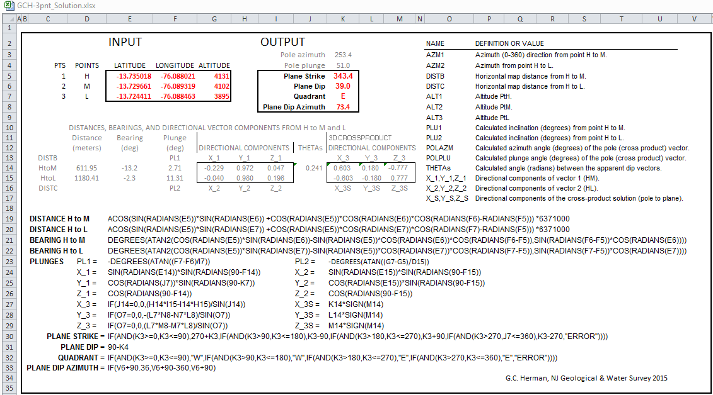

Back to the Solver
Dynamic 3-Point Geological-Plane Solver -- Help
Information about what this tool does, how to use it, the mathematics behind it, some pitfalls and user tips, and a brief accuracy analysis based on a case study.
By Jack Jamieson and Gregory C. Herman, NJ Geological & Water Survey, Version 2014 (Beta)
Topics:
What is the purpose of this tool?
This tool uses Google Earth (GE) for calculating the three-dimensional (3D) orientation of inclined (dipping) geological planes that intersect the Earth’s surface and are visible, or not masked by infrastructure, foliage, or surficial cover. Using this tool, a user interactively picks three points on the trace of a bed form, or other visually identifiable geological plane, and the tool extracts the 3D coordinates from the GE spatial reference frame, computes the dip angle and dip direction of the plane based on the input points, then places either a two-dimensional (2D) map symbol or flat, 3D disks at the second point of input along with dip (0-90) and dip azimuth (0-360) notation. The scale of the symbol is determined automatically by the spacing of the input points, or can be specified by manual text entry for 3D colored disks. The user can generate multiple symbols during a single session that can be exported in a GE format, or saved as a delimited text file for input into a Geographic Information System (GIS). Details of the incorporated mathematics are covered below.
How does it work?
This tool is a custom JavaScript software application developed at the NJ Geological & Water Survey that uses a GE plugin within an Internet browser to extract 3D spatial coordinates picked along a visible trace of the edge of a geological plane in order to calculate and display its 3D orientation. Distances and bearings between three points of latitude and longitude are derived using an adaptation of an 19th century navigational aid called the
Haversine Formula that uses three surface points on a sphere, the spherical law of cosines, and the radius of the Earth. Three input points in a plane also define two vectors lying in that plane. Cross-product, algebraic manipulation of these vector’s directional components yields a lower-hemisphere solution of the plunge angle and trend (azimuth) of a vector normal to that geometric plane. The trend of the vector normal relates to the plane dip azimuth, and the plane dip compliments the plunge angle of the vector normal.
Computer algorithm and program variables (MS Excel version)
The figure below is a screen capture of a MS Excel Worksheet detailing the mathematics and computer algorithms (in an MS Excel format).

How do I use this tool?
- To begin a 3-point session. Using ordinary GE methods either pan and zoom to a place of interest or use the text-entry box in the location finder to navigate to a named place of interest. This functions like Google Maps and is good at guessing what you are looking for. Entering latitude and longitude values also works.
- Zoom in and adjust the view so that the area of interest is seen from a bird’s-eye view; so that the display isn’t tilted.
- Pick a Symbol to Plot from the drop-down menu: (default in a 3D solid-white disk)
The current version of the program provides options for many different, black or white, 2D map symbols including:
or different types of 3D colored disks:
- For interactive entry, Alt+Click with the computer mouse three times along the trace of the feature. Inputting three points of varying elevations along a scalloped trace of an inclined surface yields the best results.
- For manual input, enter the latitude, longitude, and elevation (meters) for three points into the manual plot boxes and click Manual Plot.
The chosen symbol will be automatically scaled and plotted with annotation within the GE plugin at the 2nd designated point.
Delaware Water Gap example
- Fly to to the Delaware Water Gap:
- Pan slightly and adjust the zoom so that traces of Silurian quartzite beds are centered in the view:
- Interactively click on 3 points along the bed trace and the orientated plane and annotation for the dip/dip direction are placed near the 2nd point (P2):
- Interactively tilt the view to see how well the plane fits the inclined surface
- If it isn’t aligned correctly, or it seems as if the interpretation can be improved, simply click the Undo Last Point button and re-enter your control point(s). Each of the 3 points chosen for a plane calculation can be undone by repeatedly clicking on the button. However, once point entry for a new plane has begun, the prior calculation cannot be undone during that session.
- After completing a session, click on either of the export session buttons: Export KML or Export CSV to save your work.
Other commands and display options
Click on Toggle Historical or Toggle Borders to toggle historical imagery and borders (and places) on and off. The globe pre-loads the borders and places but historical imagery is off by default.
Clicking Clear All Data clears EVERYTHING for a 3-point session, including imported KML or KMZ content, and resets the tool.
Clicking Manual Plot uses the point values entered in the text-entry boxes
P1, P2, and P3 for the 3-point calculation. Point altitudes must also be entered as this option does not automatically pick elevations based only LAT/LON entry. This option can be used for ordinary 3-point problem solving using point control other than GE, like from subsurface observations. However, the symbol may be partially or wholly generated below ground surface, so export the session and manually raise the symbol(s) above ground using GE symbol properties.
Only 3D circles may be scaled. All other symbols are 2D and are auto-scaled based on the distance of your points. If no scale is chosen then the tool will approximate a scale for you. Otherwise, you can input numbers into x and y to scale the symbols in meters:
Sometimes the elevation of the earth will obscure the 2D symbol. This can be fixed by exporting to KML and adjusting the altitude of the resulting symbol object(s) in GE symbol properties.
At the bottom of the sidebar are the outputs. These include the elevation, latitude, and longitude of your mouse position and the calculated strike, dip, quadrant and dip azimuth after three points have been chosen.
KMZ and KML input options
A KMZ file is the easiest way to bring in custom imagery that may aid in using this tool.
URL Import provides an option for loading a pre-existing, GE KMZ file, stored on the internet that can aid in interpretation.
For example, below is a URL for KMZ file consisting of a manually-registered, screen capture of a grayscale, hill-shaded image based on LiDAR for a small area in western New Jersey:
URL: https://dl.dropboxusercontent.com/u/89445333/KML-Zs/NJ_Hunterdon_Plateau_North_LiDAR.kmz
Focus on the area toward the bottom inside the red rectangle where 2 out of the 3 points are picked along a scalloped trace of stratigraphic bedding.
Entry of the 3rd point results in a bed plane dipping NW at 17/308.
A KML file is imported by clicking on the Import KML (Local) button. The file must be resident on your local hard drive. If there are embedded images in the KML, they must be hosted on the Internet in order to be loaded properly.
Limitations and pitfalls
This tool is still being tested with respect to its limitations and pitfalls. It relies on GE’s spatial reference system to help determine the orientation of visible geological planes.
GE’s DEM uses topgraphic elevation control gained from NASA’s Shuttle Radar Topography Mission and tests to be about equal to other DEMs having 30-meter grid cells (Rusli and others, 2014). Therefore, interpretation of geological planes spanning hundreds to thousands of feet yields the best results. Also, we have found that this tool works best on gently to moderately dipping geological planes in areas of low- to moderate-topographic relief. However, its accuracy suffers when attempting an interpretation of steeply-dipping geological planes in areas of high relief. The best approach is trial and error. We have found it useful to interpret many planes of similar apparent dip during a single session in a limited area. If similar orientation values result from repeated attempts at slightly different locations, you probably have found a satisfactory solution. But be careful not to use this tool to determine plane dip around the hinge of a folded surface; this can result in a plane dipping polar opposite to the general dip direction. This problem can also arise from using the tool to pick three points on a visible feature while the view is tilted.
System requirements
The Google Earth plug-in has certain system requirements that your computer will need to meet to use this application. These requirements are detailed here: https://support.google.com/earth/answer/166094?hl=en
References
https://developers.google.com/earth/documentation
http://www.movable-type.co.uk/scripts/latlong.html
2014, Rusli, N ., Majid M. R., and Din, A. H. M., Google Earth’s derived digital elevation model: A comparative assessment with Aster and SRTM data 8th International Symposium of the Digital Earth (ISDE8) IOP Publishing, IOP Conf. Series: Earth and Environmental Science 18 doi:10.1088/1755-1315/18/1/012065, URL: http://iopscience.iop.org/1755-1315/18/1/012065/pdf/1755-1315_18_1_012065.pdf.
Back to the Solver